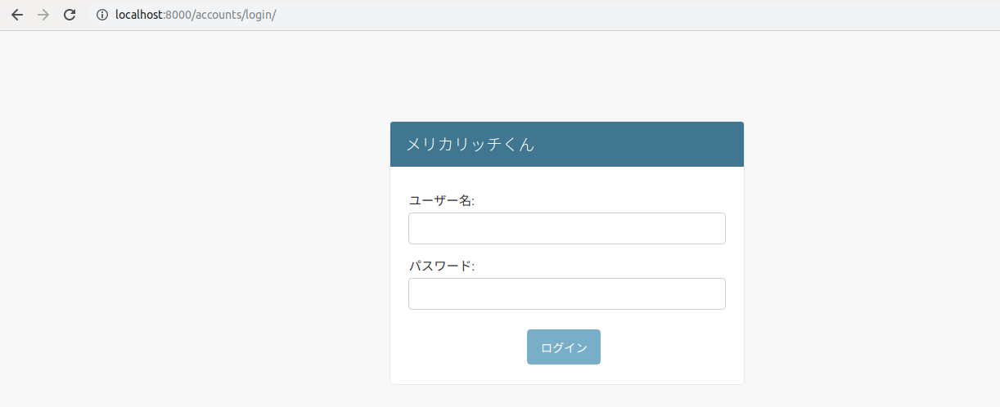
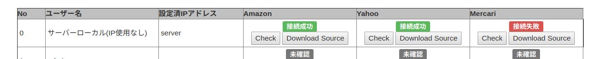

ここでは Merucarich で利用される AdminTools の利用方法を説明する。
ページの表示方法
Adminユーザー (/admin/ 以下にログインしてデータベースの操作ができるユーザー) のみが操作できる。 Adminユーザーで 通常のログインを行うと、AdminTools ページに移動する。

AdminTools ページから必要な項目を選んでツールを利用する。
IP Status Checker
特定IPを利用した場合、Amazon, Yahoo, Mercari にブロックされているか否かをチェックするツール。 ブロックされているか否かの判断にはスクレイパー（外部のページを取得するロジック）に組み込みのものを利用する。
実際の利用方法は以下の通り。
- チェックしたいIPを持つユーザーの行を選ぶ
- 設定済IPアドレスでユーザーに設定されているIPアドレスが確認できる
- ユーザーにIPアドレスが設定されていない場合、設定済IPアドレスが server と表示される
- 一番上の行はユーザーではなく、サーバーから直接チェックする (ユーザーにIPアドレスを設定していない場合と同じ)
- 複数のIPアドレスを１ユーザーに設定している場合、IPアドレスの数だけ行が現れる
- 該当IPからのアクセスに異常がないかをチェックする場合は「該当サービス」の「Check」ボタンを押す
- 例えばAmazonへのアクセスでCAPTCHAが発生しているか否かをチェックする場合、Amazon列のCheckボタンを押す
- どのサービスもアイテムの検索画面を利用しているので、対象アイテムを変えてチェックしたい場合は 一番上のチェック用URLの入力を別のものにする
- ボタンを押すと「確認中...」という表示になる
- 問題がない場合は「接続成功」、失敗した場合は「接続失敗」が表示される
- 実際にどのようなページが表示されているかを確認したい場合は、特定IPアドレス行の「Download Source」ボタンを押す
- 新しいタブに実際にどのような結果が得られたかが表示される
- 例えばブロックされている場合などは、この中に「アクセス過多」などのメッセージが表示されるのでここを確認する
